기계정비산업기사 (2019-04-27 기출문제)
1과목: 공유압 및 자동화시스템
1. 공압 모터의 특징으로 틀린 것은?
- 배기소음이 크다.
- 모터 자체의 발열이 적다.
- 에너지 변환 효율이 높으며 제어성이 좋다.
- 폭발의 위험성이 있는 환경에서도 안전하다.
(정답률: 75%)

2. 유압 실린더를 선정함에 있어서 유의할 사항이 아닌 것은?
- 행정길이
- 설치형식
- 실린더 색상
- 튜브의 안지름
(정답률: 93%)
3. 4포트 3위치 방향제어밸브 중 텐덤센터형에 대한 설명이 아닌 것은?
- 펌프를 무부하시킬 수 있다.
- 센터 바이패스형이라고도 한다.
- 실린더를 임의의 위치에서 정지시킬 수 있다.
- 중립위치에서 액추에이터 배관에 압력이 걸리지 않는다.
(정답률: 55%)
4. 다음 그림과 같은 구조의 밸브 명칭은?
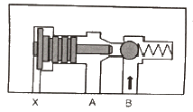
- 셔틀 밸브
- 릴리프 밸브
- 파일럿 조작 체크 밸브
- 압력 보상형 유량 조정 밸브
(정답률: 69%)
5. 다음 공·유압 기호의 명칭은?
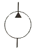
- 공압 펌프
- 유압 펌프
- 유압 모터
- 요동 모터
(정답률: 70%)
6. 유체의 과로 중 짧은 줄임 기구로 면적을 줄인 길이가 단면 치수에 비하여 비교적 짧은 것은?
- 초크
- 벤추리
- 피토관
- 오리피스
(정답률: 74%)
7. 공압 회로에서 얻어지는 압력보다 큰 압력이 필요할 때 사용하는 것은?
- 증압기
- 공기배리어
- 어큐뮬레이터
- 하이드로릭 체크유닛
(정답률: 87%)
8. 다음 회로에서 실린더의 속도제어방식은?
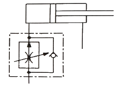
- 블리드 오프 방식
- 파일럿 오프 방식
- 전진 시 미터 인 방식
- 후진 시 미터 아웃 방식
(정답률: 80%)
9. 점성계수의 단위로 옳은 것은?
- kgf·m
- kgf/cm2
- kgf·s/m2
- kgf/s2·m4
(정답률: 60%)
10. 유압펌프 운전 시 점검 사항에 대한 설명으로 틀린 것은?
- 작동유의 온도는 유온계로 점검한다.
- 오일탱크 속에 이물질이 있는지 확인한다.
- 유면계를 이용하여 작동유의 점도를 점검한다.
- 배관의 연결부가 완전히 연결되었는지 확인한다.
(정답률: 71%)
11. 선형 스텝모터의 구성요소가 아닌 것은?
- 스핀들
- 인덕터
- 고정자 코일
- 회전자(영구자석)
(정답률: 61%)
12. 유량 제어 밸브가 아닌 것은?
- 스로틀 밸브
- 시퀀스 밸브
- 급속 배기 밸브
- 속도 제어 밸브
(정답률: 67%)
13. 다음 기능 다이어그램(Function Diagram)과 동작이 같은 것은?
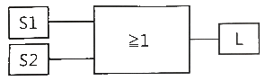
- OR
- AND
- NOT
- EX-OR
(정답률: 78%)
14. 폐회로 자동제어 시스템의 특징을 옳은 것은?
- 외란 변수의 변화가 적다.
- 작은 에너지로 큰 에너지를 조절한다.
- 외란 변수에 의한 영향을 제어할 수 없다.
- 출력신호의 일부가 시스템에 보내져 오차를 수정하는 피드백 통로가 있다.
(정답률: 73%)
15. 열전대에 사용하는 열전쌍의 조합이 틀린 것은?
- 구리 - 백금
- 철 - 콘스탄탄
- 크로멜 - 알루멜
- 크로멜 – 콘스탄탄
(정답률: 77%)
16. 설비의 효율화에 나쁜 영향을 미치는 로스(Loss) 중 속도 로스에 속하는 것은?
- 고장 정지 로스
- 작업준비/조정 로스
- 공전/순간 정지 로스
- 초기 유동 관리 수율 로스
(정답률: 64%)
17. 수요 변화에 따른 다양한 제품의 생산에 유연하게 대처하고 높은 생산성의 요구에 대응하는 생산 시스템을 의미하는 용어는?
- FMS
- FTL
- LCA
- MRP
(정답률: 76%)
18. 로드 커버와 피스톤에 연결되어 피스톤 출력 및 변위를 외부에 전달하는 공압 실린더의 구성 요소는?
- 로드 부싱
- 타이 로드
- 실린더 튜브
- 피스톤 로드
(정답률: 64%)
19. 다음 블리드 오프 방식의 회로에서 점선 안에 들어갈 기호로 적절한 것은?
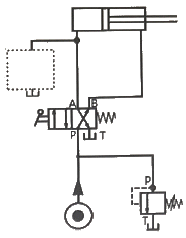
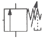
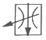
(정답률: 71%)
20. 다음 중 능동센서가 아닌 것은?
- 서미스터
- 측온 저항체
- 포토 다이오드
- 스트레인 게이지
(정답률: 47%)
2과목: 설비진단관리 및 기계정비
21. 음파가 한 매질에서 타 매질로 통과할 때 구부러지는 현상을 무엇이라 하는가?
- 파면
- 음선
- 음의 굴절
- 음의 회절
(정답률: 85%)
22. 설비 효율을 저하시키는 손실계산에 대한 설명으로 옳은 것은?
- 실질가동률은 부하시간에 대한 가동시간의 비율이다.
- 성능가동률은 속도가동률에 시간가동률을 곱한 수치이다.
- 시간가동률은 단위시간당 일정속도로 가동하고 있는 비율이다.
- 속도가동률은 설비가 본래 갖고 있는 능력에 대한 실제 속도의 비율이다.
(정답률: 45%)
23. 다음 중 윤활유의 작용으로 틀린 것은?
- 감마작용
- 방청작용
- 냉각작용
- 마찰작용
(정답률: 78%)
24. 계획공사의 견적공수와 현 보유 표준 능력을 비교하여 이월량이 거의 일정하게 되도록 공사요구의 접수 조정, 예비공사 중간 차입, 외주 발주량 조정 등을 하는 것은?
- 일정계힉
- 휴지공사
- 진도관리
- 여력관리
(정답률: 58%)
25. 설비의 효율화를 저해하는 가장 큰 로스(loss)는?
- 고장로스
- 조정로스
- 일시정체로스
- 초기 수율로스
(정답률: 84%)
26. 롤링 베어링에서 발생하는 진동의 종류에 해당되지 않는 것은?
- 신품의 베어링에 의한 진동
- 다듬면의 굴곡에 의한 진동
- 베어링 구조에 기인하는 진동
- 베어링의 비선형성에 의해 발생하는 진동
(정답률: 63%)
27. 다음의 상황은 그림과 같은 그래프에서 어느 구역의 고장기에 해당하는가?
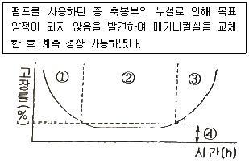
- ① 구역
- ② 구역
- ③ 구역
- ④ 구역
(정답률: 78%)
28. 2대의 기계가 각각 90dB의 소음을 발생시킨다면 2대가 동시에 동작할 때의 소음도는 얼마인가?
- 90 dB
- 93 dB
- 135 dB
- 180 dB
(정답률: 76%)
29. 설비진단 기술을 도입할 때 나타나는 일반적인 효과와 관련이 가장 적은 것은?
- 경향관리를 통하여 설비의 수명 예측이 가능하다.
- 열화가 심한 설비에 효과적이며 오감에 의한 진단이 일반적이다.
- 중요 설비, 부위를 상시 감시함에 따라 돌발사고를 미연에 방지할 수 있다.
- 점검원이 경험적인 기능과 진단기기를 사용하면 보다 정량화할 수 있으므로 쉽게 이상측정이 가능하다.
(정답률: 76%)
30. 설비의 유효가동률을 나타낸 것은?
- 설비유효가동률 = 시간가동률 / 속도가동률
- 설비유효가동률 = 시간가동룔 × 속도가동률
- 설비유효가동률 = 시간가동룔 + 속도가동률
- 설비유효가동률 = 시간가동룔 - 속도가동률
(정답률: 75%)
31. 최소의 비용으로 최대의 설비효율을 얻기 위하여 고장분석을 실시한다. 고장분석을 행하는 이유가 아닌 것은?
- 설비의 고장을 없애고 신뢰성을 향상시키기 위하여
- 설비의 가동시간을 늘리고 열화고장을 방지하기 위하여
- 설비의 보수비용을 늘려 경제성을 향상시키기 위하여
- 설비의 고장에 의한 휴지시간을 단축시켜 보전성을 향상시키기 위하여
(정답률: 81%)
32. 제품의 종류가 많고 수량이 적으며, 주문생산과 표준화가 곤란한 다품종 소량생산일 경우에 알맞은 설비배치 형태는?
- 공정별 배치
- 제품별 배치
- 라인별 배치
- 제품 고정형 배치
(정답률: 61%)
33. 설비보전요원이 제조부분의 감독자 밑에 배치되어 보전을 행하는 설비보전 방식은?
- 절충보전
- 지역보전
- 부분보전
- 집중보전
(정답률: 51%)
34. 소음원으로부터 거리를 2배 증가시키면 음압도(dB)는 어떻게 변하는가?
- 2배 증가한다.
- 1/2로 감소한다.
- 6dB 증가한다.
- 6dB 감소한다.
(정답률: 71%)
35. 고속 고하중 기어 이면의 유막이 파단 디면 국부적인 금속접촉마찰에 의한 용융으로 뜯겨 나가는 현상이 발생되는데 이러한 기어의 이면손상은?
- 리징(ridging)
- 긁힘(scrarthing)
- 스코어링(scoring)
- 정상마모(normal wear)
(정답률: 76%)
36. 진동차단기의 기본 요구조건과 가장 거리가 먼 것은?
- 온도, 습도, 화학적 변화 등에 견딜 수 있어야 한다.
- 강성을 충분히 크게 하여 차단능력이 있어야 한다.
- 차단기의 강성은 그에 부착된 진동보호 대상체의 구조적 강성보다 작아야 한다.
- 차단기의 강성은 차단하려는 진동의 최저 주파수보다 작은 고유진동수를 가져야 한다.
(정답률: 56%)
37. 다음 설비진단기법 중 응력법에 해당하지 않는 것은?
- SOAP
- 응력측정
- 응력분포해석
- 피로수명예측
(정답률: 66%)
38. 윤활유를 선정할 때 가장 기본적으로 검토해야 할 사항은?
- 적정 점도
- 운전 속도
- 다양한 유종
- 관리 방법
(정답률: 80%)
39. 설비의 신뢰성 향상을 위한 대책으로 틀린 것은?
- 예방보전의 철저
- 예지 기술의 향상
- 폐기품 관리기준의 설정개정
- 윤활관리, 급유기준의 설비개정
(정답률: 75%)
40. 보전비를 들여 설비를 만족한 상태로 유지하여 막을 수 있는 생산상의 손실을 무엇이라고 하는가?
- 단위 원가
- 열화 원가
- 기회 원가
- 수리한계 원가
(정답률: 76%)
3과목: 공업계측 및 전기전자제어
41. 다음의 진리표가 나타내는 논리게이트는?
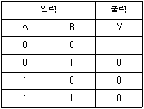
- AND
- OR
- NAND
- NOR
(정답률: 56%)
42. 소비전력 100kW, 역률 0.8인 부하의 피상전력(kVA)은?
- 75
- 80
- 100
- 125
(정답률: 52%)
43. 국제단위계(SI)에서 기본 단위로 옳은 것은?
- 길이, 질량, 시간, 전압, 열역학적 온도, 물질량, 광속
- 길이, 질량, 시간, 전류, 열역학적 온도, 물질량, 광도
- 길이, 질량, 시간, 저항, 열역학적 온도, 물질량, 광도
- 길이, 질량, 시간, 전압, 열역학적 온도, 물질량, 광도
(정답률: 66%)
44. 다음 압력계의 종류 중 탄성식 압력계는?
- 단관식 압력계
- 침종식 압력계
- 저항선식 압력계
- 벨로스식 압력계
(정답률: 78%)
45. P형 불순물 반도체의 불순물로 사용할 수 있는 것은?
- 인(P)
- 비소(As)
- 갈륨(Ga)
- 안티몬(Sb)
(정답률: 62%)
46. 2개의 입력을 가지는 경우에 두 입력이 서로 다를 때에는 출력이 “1”이 되고 같을 때는 출력이 “0”이 되는 배타적 OR 회로의 논리식은?
- Y = A · B
- Y = A + B
- Y = A ⊕ B
- Y = A ⊙ B
(정답률: 71%)
47. 전기 회로에서 일어나는 과도현상은 그 회로의 시정수와 관계가 있다. 과도현상과 시정수의 관계를 바르게 표현한 것은?
- 시정수는 과도현상의 지속 시간에는 상관되지 않는다.
- 시정수가 클수록 과도현상은 빨라진다.
- 회로의 시정수가 클수록 과도현상은 오래 지속된다.
- 시정수의 역이 클수록 과도현상은 천천히 사라진다.
(정답률: 58%)
48. 자기장의 에너지를 이용하여 검출 헤드에 접근하는 금속체를 기계적으로 접촉시키지 않고 검출하는 스위치는?
- 근접 스위치
- 플로트레스 스위치
- 광전 스위치
- 리밋 스위치
(정답률: 55%)
49. 다음 중 직류전동기의 속도 제어법이 아닌 것은?
- 저항제어
- 극수제어
- 계자제어
- 전압제어
(정답률: 65%)
50. 제어 밸브는 다음 중 어디에 속하는가?
- 변환기
- 조절기
- 설정기
- 조작기
(정답률: 64%)
51. 프로세서 제어의 제어량으로 틀린 것은?
- 속도
- 온도
- 유량
- 압력
(정답률: 49%)
52. 변환기에서 노이즈 대책이 아닌 것은?
- 실드의 사용
- 비접지
- 접지
- 필터의 사용
(정답률: 78%)
53. 3상 유도전동기의 회전속도 제어와 관계없는 요소는?(문제 오류로 실제 시험에서는 모두 정답처리 되었습니다. 여기서는 1번을 누르면 정답 처리 됩니다.)
- 전압
- 극수
- 슬립
- 주파수
(정답률: 80%)
54. 온도가 변화함에 따라 저항값이 변화하는 특성을 이용하여 온도를 검출하는데 사용하는 반도체는?
- 발광 다이오드
- 황화 카드뮴(CdS)
- 배리스터(Varistor)
- 서미스터(thermistor)
(정답률: 78%)
55. R1 = 10Ω, R2 = 20Ω의 저항이 병렬로 연결된 회로에 전압을 인가하면 전체 전류가 6A 이다. 저항 R2에 흐르는 전류(A)는?
- 1
- 2
- 3
- 4
(정답률: 50%)
56. 잔류 편차가 발생하는 제어계는?
- 비례 제어계
- 적분 제어계
- 비례 적분 제어계
- 비례 적분 미분 제어계
(정답률: 59%)
57. 차동증폭기의 동상신호제거비에 대한 설명으로 틀린 것은?(오류 신고가 접수된 문제입니다. 반드시 정답과 해설을 확인하시기 바랍니다.)
- 증폭기의 잡음을 제거하는 능력을 말한다.
- 차동신호이득은 크고, 동상신호이득은 가능한 작아야 좋다.
- CMRR(Common-Mode Rejention Ratio)로 표현된다.
- 동상·입력 시 출력 전압은 2배가 된다.
(정답률: 55%)
58. 100μF의 콘덴서의 200 V, 60 Hz 의 교류전압을 가할 때 용량성 리액턴스(Ω)는?
- 30.52
- 26.53
- 24.63
- 30.42
(정답률: 59%)
59. 그림의 시퀀스 회로를 논리식으로 나타내면?
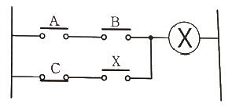
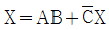
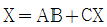
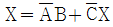
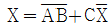
(정답률: 73%)
60. 다음 중 트랜지스터의 접지방식이 아닌 것은?
- 게이트접지
- 이미터접지
- 베이스접지
- 컬렉터접지
(정답률: 60%)
4과목: 기계정비 일반
61. 실로코 통풍기의 베인 방향으로 옳은 것은?
- 경향베인
- 수직베인
- 전향베인
- 후향베인
(정답률: 66%)
62. 기어의 이 부분이 파손되는 주원인이 아닌 것은?
- 균열
- 마모
- 피로 파손
- 과부하 절손
(정답률: 54%)
63. 감압밸브에 관한 설명으로 옳은 것은?
- 밸브의 양면에 작용하는 온도 차에 의해 자동적으로 작동한다.
- 피스톤의 왕복운동에 의한 유체의 역류를 자동적으로 방지한다.
- 내약품, 내열 고무제의 격막 판을 밸브시트에 밀어 붙인 밸브이다.
- 유체압력이 높을 경우에는 자동적으로 압력을 감소시키며 감소된 압력을 일정하게 유지한다.
(정답률: 81%)
64. 송풍기를 흡입 방법에 따라 분류할 때 포함되지 않는 것은?
- 풍로 흡입형
- 토출관 취부형
- 흡입관 취부형
- 실내 대기 흡입형
(정답률: 53%)
65. 무동력 펌프라고도 하며, 비교적 저 낙차의 물을 긴 관으로 이끌어 그 관성 작용을 이용하여 일부분의 물을 원래의 높이 보다 높은 곳으로 수송하는 양수기는?
- 마찰펌프
- 분류펌프
- 기포펌프
- 수격펌프
(정답률: 81%)
66. 다음 중 펌프의 부착계기가 아닌 것은?
- 리밋 스위치
- 압력 스위치
- 플로트 스위치
- 액면제어 스위치
(정답률: 52%)
67. 다음 중 액상 개스킷의 사용법 중 잘못된 것은?
- 얇고 균일하게 칠한다.
- 바른 직후에 접합해서는 안 된다.
- 접합면에 수분 등 오물을 제거한다.
- 사용온도 범위는 대체로 40~400℃ 이다.
(정답률: 72%)
68. 어떤 볼트를 조이기 위해 50kgf·cm 정도의 토크가 적당하다고 할 때 길이 10cm의 스패너를 사용한다면 가해야 하는 힘은 약 얼마 정도가 적정한가?
- 5 kgf
- 10 kgf
- 50 kgf
- 100 kgf
(정답률: 73%)
69. 펌프의 배관을 90도로 방향을 바꾸고자 할 때 사용하는 배관용 이음쇠는?
- 크로스(cross)
- 유니언(union)
- 엘보(elbow)
- 레듀셔(reducer)
(정답률: 75%)
70. 기어 감속기 중 평행 축형 감속기의 종류가 아닌 것은?
- 웜 기어 감속기
- 스퍼 기어 감속기
- 헬리컬 기어 감속기
- 더블 헬리컬 기어 감속기
(정답률: 75%)
71. 수도, 가스, 배수관 등에 사용하는 주철관이 강관에 비하여 우수한 점은?
- 충격에 강하고 수명이 길다.
- 내약품성, 열전도성, 용접성이 좋다.
- 비중이 작고 높은 내압에 잘 견딘다.
- 내식성이 우수하고 가격이 저렴하다.
(정답률: 75%)
72. 송풍기(blower)는 일반적으로 사용 공기압력이 몇 kgf/cm2 인가?
- 0.01 이하
- 0.1 ~ 1.0
- 2.0 ~ 10
- 20 이상
(정답률: 78%)
73. 3상 유도 전동기의 구조에 속하지 않는 것은?
- 정류기
- 회전자 철심
- 고정자 철심
- 고정자 권선
(정답률: 60%)
74. 두 축의 중심을 정확히 일치시키기 어려울 때 사용되며 고무, 강선, 가죽, 스프링 등을 이용하여 충격과 진동을 완화시켜 주는 커플링은?
- 올덤 커플링
- 고정식 커플링
- 플랜지 커플링
- 플랙시블 커플링
(정답률: 74%)
75. 관의 직경이 비교적 크고, 내압이 비교적 높은 경우에 사용되며, 분해 조립이 편리한 관이음은?
- 나사이음
- 용접이음
- 플랜지이음
- 턱걸이음
(정답률: 68%)
76. 기어 전동장치에 대한 설명으로 틀린 것은?
- 큰 동력을 일정한 속도비로 전달할 수 있다.
- 소형이면서 높은 효율로 큰 회전력을 전달할 수 있다.
- 서로 맞물려 있는 한 쌍의 기어에서 잇수가 많은 것을 피니언이라 한다.
- 연속적인 이의 물림에 의하여 동력을 전달하는 기계요소를 기어라 한다.
(정답률: 63%)
77. 열박음을 하기 위해 베어링을 가열 유조에 넣고 가열할 때 적당한 온도는?
- 40℃ 정도
- 100℃ 정도
- 150℃ 정도
- 190℃ 정도
(정답률: 74%)
78. 원심펌프 스터핑 박스의 봉수 압력에 대한 설명으로 옳은 것은? (단, 단위는 kgf/cm2 이다.)
- 흡입 압력보다 0.5 ~ 1 정도 높게 한다.
- 토출 압력보다 0.5 ~ 1.5 정도 낮게 한다.
- 흡입 압력보다 1.5 ~ 2 정도 높게 한다.
- 토출 압력보다 1 ~ 2 정도 낮게 한다.
(정답률: 57%)
79. 펌프를 구조상 분류할 때 왕복 펌프의 종류가 아닌 것은?
- 피스톤 펌프
- 플런저 펌프
- 다이어프램 펌프
- 로터리 플랜지 펌프
(정답률: 52%)
80. 다음 배관용 공기구에서 파이프에 나사를 절삭하는 것은?
- 오스터
- 파이프커터
- 파이프벤더
- 플레어링 툴 세트
(정답률: 64%)